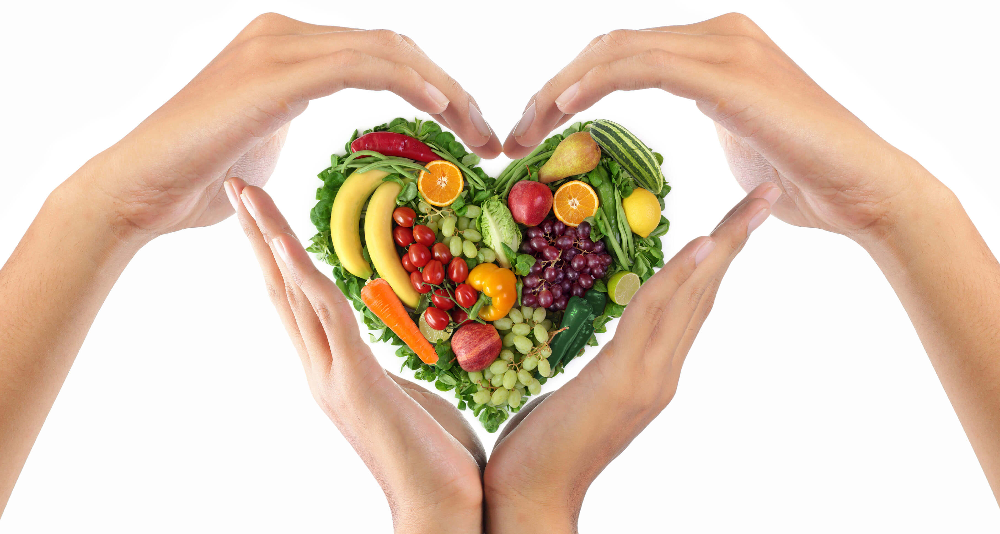

Na Foodsavers, buscamos reduzir o desperdício de alimentos, nutrir comunidades e promover a sustentabilidade. Nossos valores de inovação, responsabilidade ambiental e compromisso comunitário impulsionam nossa missão de resgatar alimentos excedentes e criar um impacto positivo duradouro. Junte-se a nós para transformar desperdício em oportunidade e construir um futuro mais sustentável e justo para todos.
- Redução do Desperdício de Alimentos: Ao trabalhar conosco, as empresas podem reduzir significativamente o desperdício de alimentos em seus estabelecimentos, economizando recursos preciosos e contribuindo para um planeta mais sustentável.
- Impacto Social Positivo: Participar da Foodsavers significa fazer parte de uma solução para a fome e a insegurança alimentar. Os alimentos resgatados são direcionados para comunidades carentes, alimentando aqueles que mais precisam.
- Responsabilidade Ambiental: A redução do desperdício de alimentos não apenas beneficia as pessoas, mas também o meio ambiente. Menos alimentos desperdiçados significam menos emissões de gases de efeito estufa e menos desperdício de recursos naturais, promovendo a sustentabilidade.
Avaliações
 Pedro Almeida (Cliente):
"Como cliente da Foodsavers, sinto-me bem em saber que estou apoiando uma empresa que se preocupa com o
meio
ambiente e com a comunidade. Além disso, seus produtos são de alta qualidade e sua missão torna minha
experiência de compra ainda mais significativa."
Ana Oliveira (Dona de Casa):
"A Foodsavers mudou minha perspectiva sobre desperdício de alimentos. Agora, com suas dicas e recursos,
consigo aproveitar ao máximo cada ingrediente, economizando dinheiro e reduzindo o desperdício em minha
própria casa. Eles não apenas salvam alimentos, mas também ensinam como fazê-lo!"
Carolina Santos (Voluntária):
"Participar como voluntária da Foodsavers tem sido uma
experiência gratificante. Cada semana, ajudamos a resgatar toneladas de alimentos que, de outra forma,
seriam desperdiçados. Ver o sorriso no rosto das pessoas quando recebem esses alimentos é uma lembrança
constante do poder da solidariedade."
Marcela Costa (Agricultora):
"Trabalhar com a Foodsavers não apenas me ajuda a reduzir o
desperdício em minha fazenda, mas também me conecta com outros produtores e consumidores comprometidos
com a
sustentabilidade. É inspirador fazer parte de uma rede que valoriza tanto nossos recursos naturais."
Pedro Almeida (Cliente):
"Como cliente da Foodsavers, sinto-me bem em saber que estou apoiando uma empresa que se preocupa com o
meio
ambiente e com a comunidade. Além disso, seus produtos são de alta qualidade e sua missão torna minha
experiência de compra ainda mais significativa."
Ana Oliveira (Dona de Casa):
"A Foodsavers mudou minha perspectiva sobre desperdício de alimentos. Agora, com suas dicas e recursos,
consigo aproveitar ao máximo cada ingrediente, economizando dinheiro e reduzindo o desperdício em minha
própria casa. Eles não apenas salvam alimentos, mas também ensinam como fazê-lo!"
Carolina Santos (Voluntária):
"Participar como voluntária da Foodsavers tem sido uma
experiência gratificante. Cada semana, ajudamos a resgatar toneladas de alimentos que, de outra forma,
seriam desperdiçados. Ver o sorriso no rosto das pessoas quando recebem esses alimentos é uma lembrança
constante do poder da solidariedade."
Marcela Costa (Agricultora):
"Trabalhar com a Foodsavers não apenas me ajuda a reduzir o
desperdício em minha fazenda, mas também me conecta com outros produtores e consumidores comprometidos
com a
sustentabilidade. É inspirador fazer parte de uma rede que valoriza tanto nossos recursos naturais."